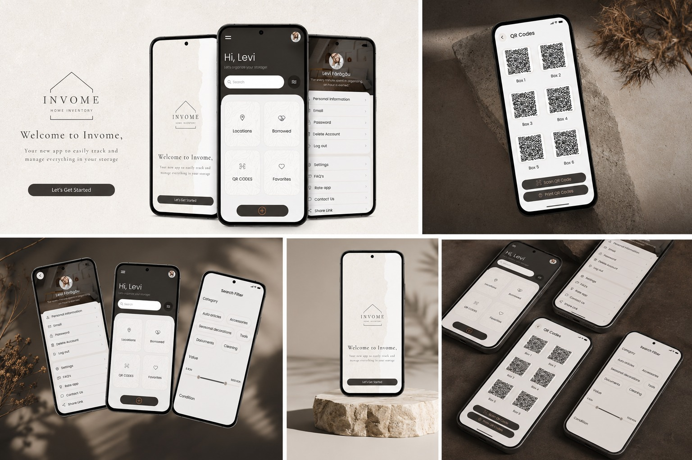

Invome — a calmer way to organize everything you store at home.
A mobile app that helps people organize their belongings by location, find them instantly with QR codes, and keep track of what they've lent out or forgotten.

The problem
Many people struggle to keep track of the things they store at home. As the number of items grows, it gets harder to remember where they are, what they're worth, or who they were lent to.
Without a system, that means wasted time, frustration, and inefficient management of personal belongings.
Why I chose this problem
I picked this topic because it's something I kept noticing around me and experiencing myself. I wanted to design a practical solution that simplifies organizing items and cuts down the time spent searching for them.
My role
I ran the whole design process — from research and defining the problem, through designing the user experience, to building the final interface.
Research
To understand how people actually behave, I ran interviews and a survey, then synthesized the findings into a User Persona and a Customer Journey Map.
Key insights
- 100% of participants have a dedicated storage space.
- 75% store more than 50 items.
- 75% regularly spend time looking for their belongings.
- Everyone found a QR-code labeling system useful.
- Everyone valued being able to track the value of stored items.
(add: assets/img/invome-research.jpg)

The solution
I designed an app that lets people organize items by locations and sub-locations, and find them fast through search and by scanning QR codes attached to their storage boxes.
It also helps people track borrowed items, estimate the value of their belongings, and get notifications for things they've forgotten or stopped using.
Design process
Moving from problem to structure, and from structure to a polished interface.
(add: assets/img/invome-sitemap.jpg)

(add: assets/img/invome-userflow.jpg)

(add: assets/img/invome-wireframes.jpg)

Final UI
The final interface is minimalist by design — reducing cognitive load so people can find the information that matters quickly.
(add: assets/img/invome-ui.jpg)

(add: assets/img/invome-system.jpg)

Design decisions
I chose a minimalist interface to reduce cognitive load and help people find important information quickly. The color palette, typography, and components were chosen to create a clear, consistent, and easy-to-use experience.
Outcome
The project resulted in a complete prototype of the app that validates the concept and demonstrates the entire design process — from identifying the problem to the final solution.
What I learned
This project helped me understand that a successful digital product isn't defined by how it looks alone, but above all by the experience it gives the user.
I learned how important research is when making design decisions, and how choices around color, visual hierarchy, and structure shape the user's perception from the very first seconds of interaction.
I also understood that simplicity doesn't mean a lack of functionality — it means removing the elements that create confusion or frustration.
What I'd improve
If I continued developing the project, I'd run additional usability testing sessions to validate the proposed solutions and iterate on the interface based on the feedback. I'd also extend the app's functionality and refine certain screens to further improve the experience.